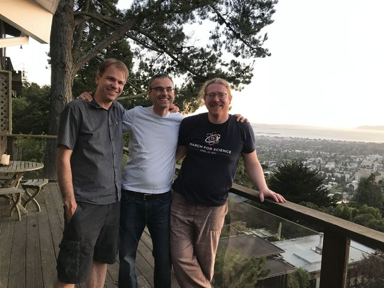
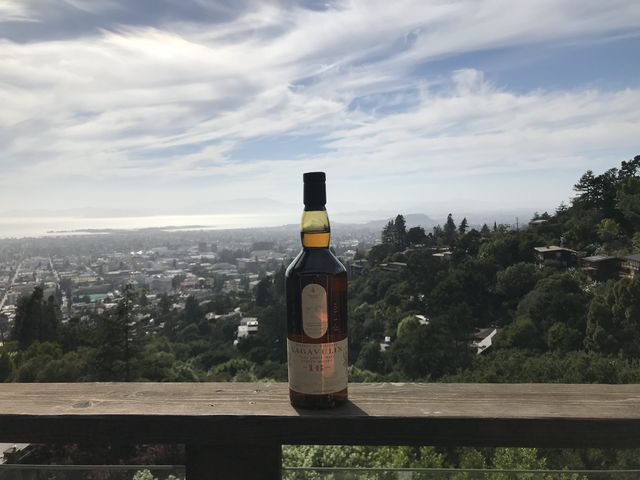
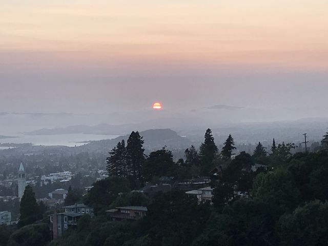
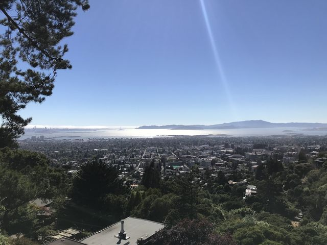

Skip to content
Helge Gonnermann
Volcanoes, Magmatic Processes, Fluid Flow
Menu
Home
Research
Publications
Lab
People
Field Trips
Opportunities
CV / Contact
← All field trips
CIDER Workshop, Berkeley, summer 2019
4 photos

Kyle Anderson, Helge Gonnermann and Philipp Ruprecht (left to right) at the CIDER Workshop, Berkeley, 2019


